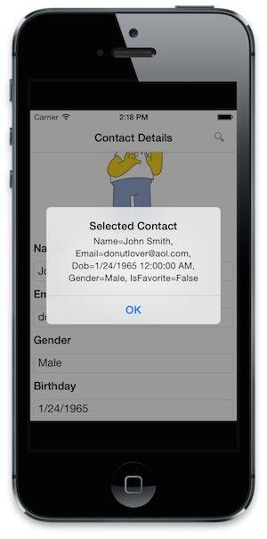

Duration
15 minutes
Goals
This group exercise will introduce the data binding infrastructure built into Xamarin.Forms by taking an existing application and converting it to use bindings to connect the data defined in code with the UI defined in XAML.
Assets
This exercise includes a starter project in the Part 01 Resources folder. Make sure you have this folder available before starting the exercise.
Challenge
This exercise takes an existing My Contacts application which displays a single contact card of Homer Simpson. The code behind current populates the UI with the data and then watches the various UI events to transfer changes back to the underlying data object.
Your job will be to remove the existing manual data transfer code and replace it with data bindings, starting with code and ending with XAML bindings.

Here are the basic steps:
- Open and examine the starter solution.
-
Create a
Bindingin code behind to tie a property of ourPersonobject to anEntrycontrol in the UI. This will only be done for a single property to demonstrate the creation of bindings in code. - Next, replace the binding in code with XAML-based bindings for almost all our UI elements using the
Personobject as ourBindingContext. You will want to data bind the following properties:NameEmailDobIsFavorite
HeadshotUrlandGender), but you will find that they won't quite work at the moment. In a future exercise, we will fix this problem.
How do I create a Binding in code behind?
If you have worked with data binding on other platforms, then feel free to experiment with this lab - read the above steps and try to create the bindings in code and XAML, remember that you need to set the BindingContext to the source object and then associate each Binding object using the SetBinding method in code, or the {Binding} markup extension in XAML.
If data binding is new to you, or you need some guidance, then use the following steps as you go through the lab to get more detailed information on using the binding infrastructure.
Steps
Open the Starter Solution
- Open the MyContacts.sln solution in the Part 01 Resources/Lab.Start.
- Go ahead and build and run the application to make sure it is all working before we begin making changes. As mentioned earlier, it displays a single person in our contact list and allows you to edit the details of the contact. It also has a Show button in the Tool bar which displays the details of the underlying
Personin an alert box. - The solution is fairly straight-forward. There are four projects, we will perform all our work in MyContacts Portable Class Library which is the shared code and UI layer. The other three projects are the platform-specific host projects for iOS, Android and Windows Phone.
- Here are the classes / files we will work with:
| File | Description |
|---|---|
| App.cs |
Contains the Application class for our Xamarin.Forms application which defines the starting page for the application.
|
| ContactDetails.xaml(.cs) | Defines the UI and logic for our initial page. The XAML file defines the UI using markup, the associated code file then provides the behavior for the UI. |
| SimpsonFactory.cs |
Contains the sample data we will be working with. This defines a factory class (SimpsonFactory) that retrieves our characters.
|
| Person.cs |
Defines the Person class used for all the objects coming from the SimpsonFactory above, the objects we are going to display. It also contains an enumeration (Gender) to define Male vs. Female characters.
|
Create a Binding in code
In this first step, we will create a single binding manually - just to see the steps and the required pieces you need. Remember from the lecture that there three required pieces of information: source (BindingContext), property path, and target BindableProperty.
- Open the ContactDetails.xaml.cs code behind file and locate the constructor.
- Comment out or delete the lines which set the
nameEntrycontrol'sTextproperty and wire up to theTextChangedevent. - Set the
BindingContexton thenameEntrycontrol to the activePerson. - Create a
Bindingwhich has the property path - we want to tie to theNameproperty. - Finally, add a binding to the
nameEntrycontrol using theSetBindingmethod - you want to tie theBindingto theEntry.TextPropertyproperty.
- Run the application and make sure the name field is populated. Try changing it's value and then click the Show button to see if it changed the underlying object as you can see here: 
Create XAML-based bindings for our controls
You can create bindings in code, just as you did a moment ago, but more often than not, you will want to place the bindings in XAML. This reduces our code behind, decouples our UI from the code behind and makes the code behind primarily oriented towards behavior instead of behavior + display logic.
- First, we want to set the
BindingContext. We could set it on every single element, but remember from the lecture thatBindingContextis inherited when it is set on a parent element. So, assign theBindingContexton the page itself - make it thePersonobject we want to get all our data from. - The controls we want to data bind are:
- nameEntry
- emailEntry
- birthday
- favoriteSwitch
- For each of the above controls, we want to:
- Comment out or remove the existing code-behind that populates the controls with data.
- Go ahead and comment out or remove the existing code-based binding you added in the last part.
- Comment out or remove the event handling - just as we did with the nameEntry in the first part.
- Next, open the ContactDetails.xaml markup file and add in
{Binding PROPERTY_NAME}tags on each of the above controls to tie the appropriate property to each target. You will want to look at the current code you just commented out to determine the proper source property and target property. For example, the nameEntry would look like this:<Entry x:Name="nameEntry" Text="{Binding Name}" />This would tie theTextproperty of theEntrycontrol to theNameproperty of theBindingContext.
- Run the application and make sure each of the fields displays data. Try changing a control's value and click the Show button to see if it changed the underlying object. Hint: it should!
Summary
In this exercise, you have taken an existing Xamarin.Forms application and modified it to use Data Binding to populate the UI.
There is a completed version of the lab exercise in the resources folder.